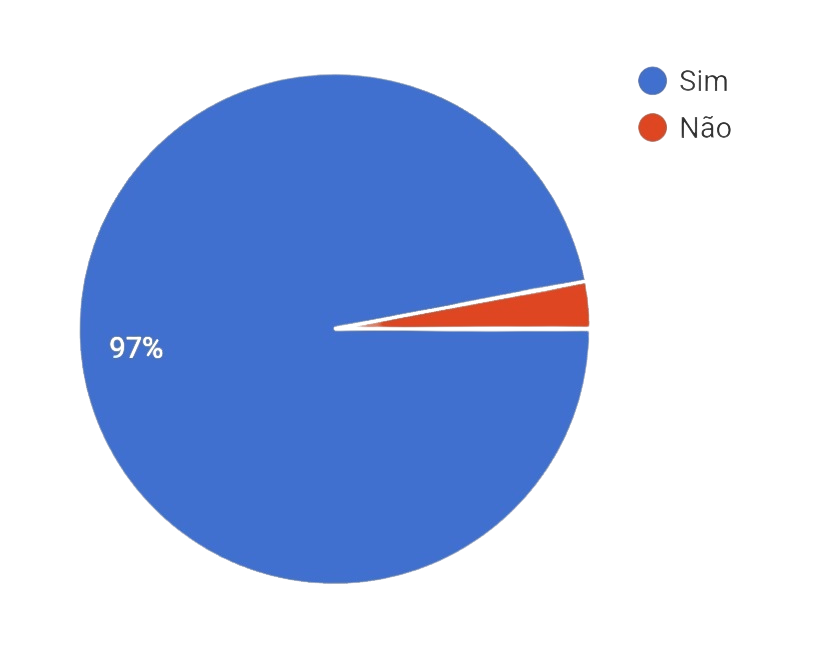

Em 2023, os bairros da Regional 11 concentraram 12,4% do total de casos de violência contra a mulher atendidos no Centro, em um total de 660 ocorrências no território.
Os bairros com o maior número de ocorrências foram Messejana (15 casos), Jangurussu (17),
Mondubim (14 casos), Bom Jardim (12 casos), Passaré (12 casos), Barra do Ceará (11 casos), José Walter (11 casos).
Centro de Referência realizou mais de 7,5 mil atendimentos a mulheres vítimas de violência em 2023 Os principais atendimentos se referem à violência psicológica, física e patrimonial. A Prefeitura oferece abrigamento e apoio jurídico e psicológico.
dados feitos com 134 alunos da escola.
Você sabe o que é feminicídio?

Você conhece a Lei Maria da Penha?
Você acha que a violência contra as mulheres tem efeitos graves na saúde física das vítimas?

Você considera o machismo um problema presente na sociedade atual?
Você acha que a desigualdade de gênero pode influenciar a violência contra as mulheres?

Você sabe se existem abrigos ou centros de acolhimento para mulheres vítimas de violência na sua região?

Em caso de violência contra a mulher ,você saberia como lidar com a situação?